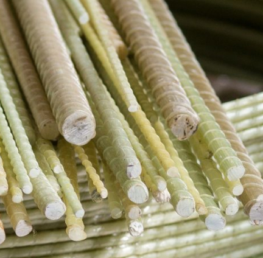

Блог
@@for(let i = 0; i < 8; i++)
{
}

Стеклопластиковая арматура
Несмотря на широкую популярность и востребованность, стеклопластиковая арматура для армирования является всё-таки инновационным материалом. Поэтому при сборке армирующего каркаса из композитных материалов недопустимо применять традиционные методы вязки недопустимо применять традиционные методы вязки арматуры с помощью проволоки.
Подробнее